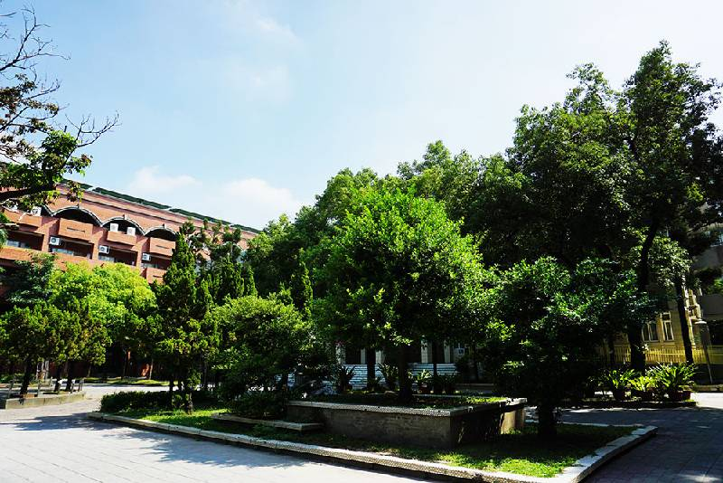

校園美麗造景樹木，竟暗藏玄機
學生受害後，全校都震驚了!!
記者：烤鴨腸(資三甲11黃子晉)
走在校園中，能看到各式各樣的植物，這些植物是拿來幫忙淨化空氣和做為景觀植物用的
當然可以成為各式各樣照片的背景，譬如此報導用的照片，翠綠的樹葉和密集的樹葉
都很適合拿來入景。
但是相對的你需要注意不要踏到草坪上外，負責該掃區且職務是掃落葉的同學也會累個半死
還有一些長得很高大的樹的根會長到地面上甚至破壞地磚，所以在觀賞拍照的同時
也要注意安全，和感謝掃地同學的辛勞喔!
----------------------給擬議點小小的版權震撼------------------------